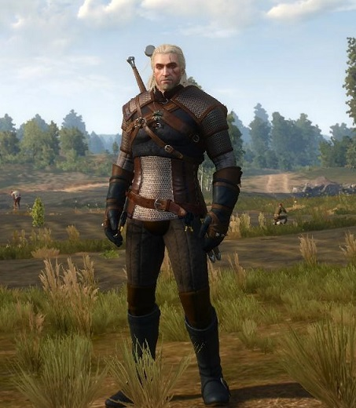
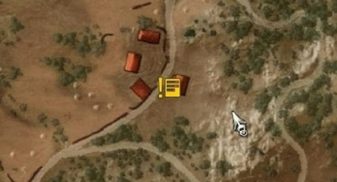
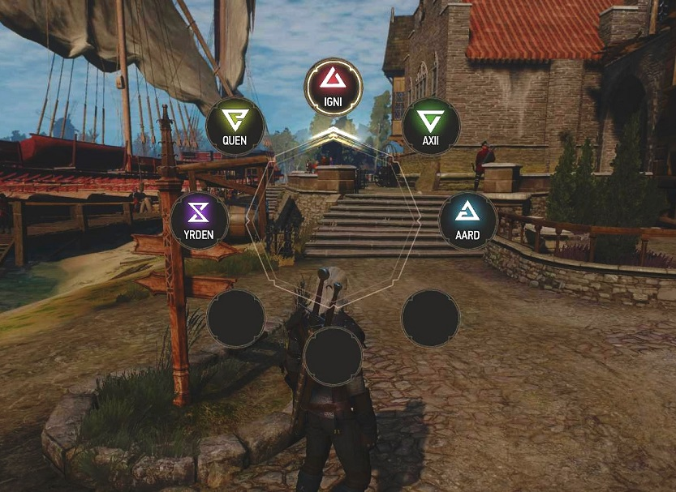
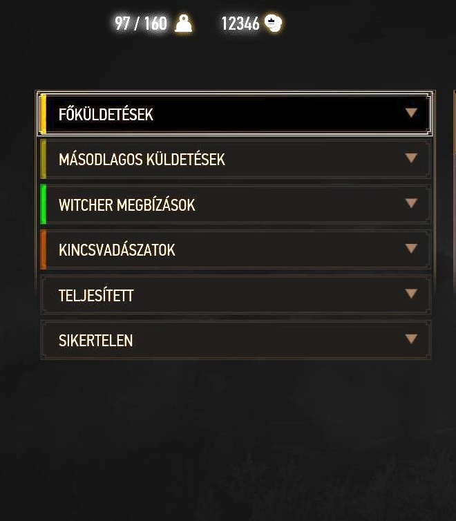

{kind=link}
{kind=link}

A The Witcher 3.
A The Witcher 3 szerintem az egyik legjobb játék amit valaha készítettek. Lenyűgöző látványvilág, és csodálatos tájak jellemzik a játékot. Egy végtelen világ nyílik meg előttünk a játékban amit élvezet bebarangolni. Mint minden történetnek úgy ennek is van főhőse. Főhősünk egy úgynevezett witcher. A witcherek különleges tulajdonságokkal vannak megáldva. A witcherek nagyon erősek, és bátrak. E mellett különböző emberfeletti képességük van. Képesek tüzet lőni ellenfelükre. De védőpajzsot is képesek maguk köré vonni. Több ilyen képességük is van amiről még szó fog esni. A witcherek küldetéseket, és különböző megbizásokat szoktak elvállalni amikből megélnek. Általában szörnyeket, és mindenféle fenevadakat szoktak levadászni amik a jónépet veszélyeztetik. A mi witcherünk neve Geralt. Geralt a farkas-iskolában tanulta ki a witcherség minden csínyját bínyát. Van még ezen kívül macska, griff és medve iskola is.Geralt különböző kontraktusok (szerződés) alapján dolgozik. A kontraktusokat a hirdetőtáblákon lehet elolvasni. Minden faluban, városban vannak hirdetőtáblák amiket sárga ikon jelez a térképen. Ezeket a hirdetőtáblákat meglátogatja Geralt, és elolvassa a rajtuk található megbízásokat. Rengeteg ilyen megbízás van, hol eltűnt gyerekeket kell megtaláljon, hol a környéked ólálkodó vérfarkast kell levadászon.


 Aztán felkeresi azt a személyt aki a kontraktust kitette a hirdetőtáblára,
és megbeszéli vele az elvégzendő feladatot. A witcherek nem kötelesek
elvállalni a feladatokat mindig ők döntik el hogy akarják-e vagy sem a megbízást.
Bármikor visszatérhetnek az adott személyhez, és újból egyezkedhetnek.
Aztán felkeresi azt a személyt aki a kontraktust kitette a hirdetőtáblára,
és megbeszéli vele az elvégzendő feladatot. A witcherek nem kötelesek
elvállalni a feladatokat mindig ők döntik el hogy akarják-e vagy sem a megbízást.
Bármikor visszatérhetnek az adott személyhez, és újból egyezkedhetnek. A witcherek jóságos, igazságos személyek soha nem keresik a bajt de ha egy elesett személy segítségére szorul ők mindig kéznél vannak. A játékban vannak fejlettségi szintek, és a feladatok is különböző fejlettségi szinten vannak. Tanácsos azon a szinten elvállalni a feladatot amilyen szinten épp áll a witcher. Nem ajánlatos sokkal magasabb szintű feladatot elvállalni mert annak általában kudarc a vége. Ha például a wicther 6-os szinten van akkor maximum 8-as szintű feladatot ajánlatos elvállalni. Ha a witcher sokkal magasabb szinten van mint az elvállalt feladat akkor természetesen könnyebb dolga van. Érdemes tehát magasabb szintre lépni a játékban, és úgy elvállalni az alacsonyabb szintű feladatokat. A játékban feladatokat, és megbízásokat kell elvégezni ahhoz, hogy szintet lépjünk. A feladatok elvégzése után tapasztalati pontokat is kapunk amik segítenek fejleszteni képességeinket.

Képességek
Öt képesség áll rendelkezésünkre.
- Igni
- Axi
- Quen
- Aard
- Yrden
Ezeket a képességeket tudja váltogatni Geralt játék közben. Az Igni a tűz képesség. Tüzet tud lőni ellenfeleire ezzel a képeséggel. Az Axii az ellenfelek tudatának módosítására szolgál. Ha valakit az Axii jellel támadnak meg annak tudatállapota módosulni fog úgy is lehet mondani elkábul. Kábult állapotban pedig sokkal könnyebb végezni vele. A Quen jel egy láthatatlan pajzsot von a witcher köré. Ha a pajzs védi sokkal nehezebb őt megsebesíteni. Az ütések elérik a witchert de nem hatnak rá annyira ha a pajzs védi őt. Az Aard jel az ellenfél stabilitásának kimozdítására szolgál. Ha valakit az Aard jellel megtámad a witcher az kibillen egyensúlyából. Végül az Yrden jel ami egy úgynevezett csapdába zárja az ellenfelet. Ha a csapdában van nem tud abból menekülni. Az ellenfél egy körbe záródik amiből nem tud szabadulni így sokkal könnyebb támadni őt. Ezek a képességek fejleszthetők. Minél több tapasztalati pontot kapunk a feladatok elvégzése után annál erősebbre fejleszthetők képességeink. A witchereknek vannak különleges érzékeik is. Az érzékeket általában a le vadászandó szörnyek felkutatása közben lehet legjobban kihasználni. Különleges látásával a wicther látja a lábnyomokat amiket más nem láthat. Hallása is kifinomult a witchernek. Hallásával olyan dolgokat hal meg amiket földi hallandó nem. Szaglása is fejlett. Szag után is képes a szörnyeket követni.
